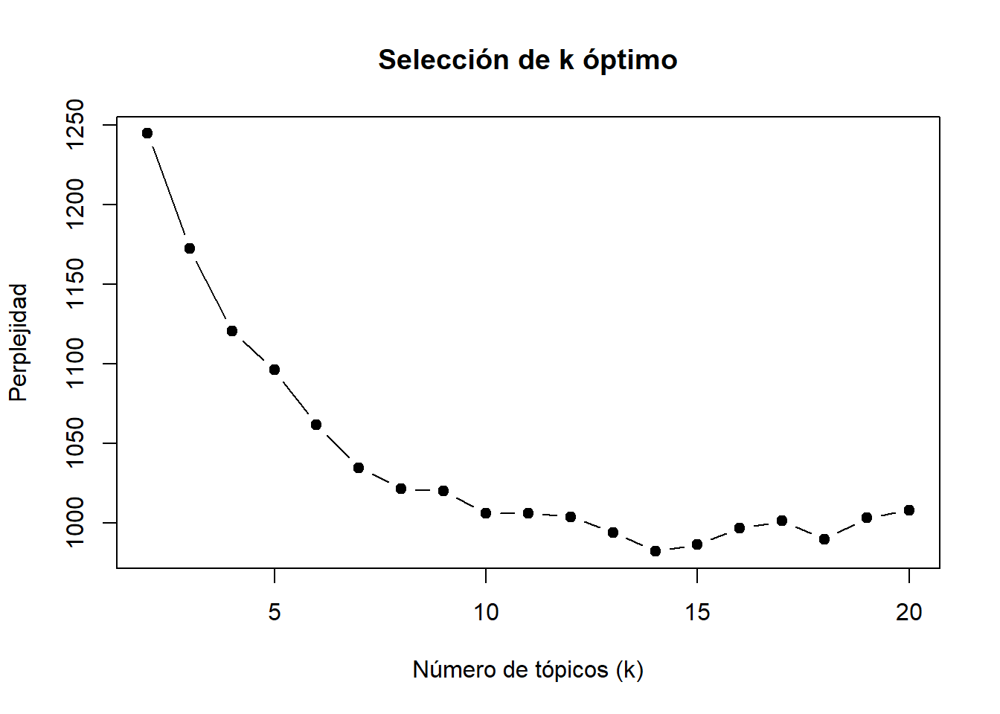
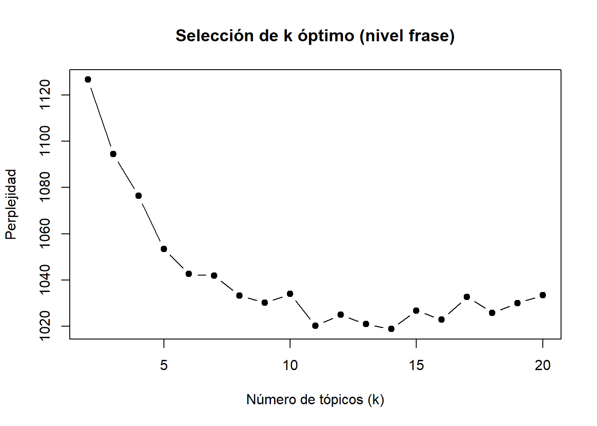

Presentación
El análisis de tópicos nos permite realizar una primera selección y mapeo del corpus de sentencias. En este documento se presentan dos formas para realizar un análisis de tópicos: (I) inductivo mediante el uso LDA, (II) deductivo mediante el uso de KeyATM.
El primer tipo, nos permite estimar la cantidad de tópicos óptima que el corpus ofrece, permitiendonos explorar desde los datos mismos.
El segundo tipo, nos permite estimar la cantidad de documentos que pueden vincularse a los tópicos teóricamente propuestos.
Ambos nos permiten ver la probabilidad de que los documentos se relacionen con cada tópico.
En una primera instancia, este análisis de tópicos nos permite explorar el corpus, pero al mismo tiempo realizar una primera selección de documentos a partir de mayor probabilidad de representar el tópico.
Datos
Se analiza un documento con 66 páginas.
Análisis de tópicos
I. INDUCTIVO
A nivel de PALABRAS
Análisis de perplejidad (k óptimo)
El análisis de perplejidad nos indica que el número óptimo de tópicos es 16.
Palabras por tópico
# A tibble: 7 × 2
topic palabras
<int> <chr>
1 1 hijos, persona_juridica000, meses, contrato, gastos, 2010, señor, traba…
2 2 empresa, matilde, casa, cuando, luego, sabe, trabajó, hace, parte, sepa…
3 3 cónyuge, matilde, años, familiar, señora, laboral, donde, 2009, hijo, f…
4 4 partes, divorcio, demanda, matrimonio, convivencia, entre, identidad, c…
5 5 relación, infidelidad, ester, hermano, pareja, septiembre, tiempo, 2018…
6 6 matrimonio, hijos, común, vida, económica, reconvencional, hogar, duran…
7 7 matilde, cuenta, 2024, sociedad, sociedades, demandante, respecto, mant…Se indica que agrupe las 20 palabras con mayor probabilidad de ser parte del tópico.
A nivel de FRASES

# A tibble: 60 × 4
# Groups: topic [6]
topic gamma doc_id frase
<int> <dbl> <int> <chr>
1 1 0.580 46 se trae a la vista: .- causa del cumplimiento alimentos, …
2 1 0.398 62 ahora, desde el punto de vista patrimonial y considerando…
3 1 0.354 61 y los gastos de salud de los mismos (cuyos gastos de isap…
4 1 0.338 62 mientras que la empresa “sociedad personajuridica000”, cu…
5 1 0.317 44 .-se incorpora por el cbr de santiago, de folio y (no reg…
6 1 0.314 60 mientras que las mismas pericias, sumadas a las cartolas …
7 1 0.298 27 .-oficio de afc chile, informe histórico de cobro de bene…
8 1 0.295 61 además, como ya se dijo no solamente debe disponer de rec…
9 1 0.284 39 añade que paga pensión de alimentos desde su cuenta perso…
10 1 0.277 44 .- a folio se incorpora del registro de vehículos motoriz…
# ℹ 50 more rowsTopic 1
print(top_frases_por_topico$frase[1:10]) [1] "se trae a la vista: .- causa del cumplimiento alimentos, específicamente las siguientes piezas: liquidación a folio del e-book, liquidación a página del e-book, liquidación de deuda página del e-book, liquidación página del e-book, derivación registro nacional de deudores, página del e-book, liquidación de deuda de página del e-book, registro de deudores de pensión de alimentos de página , página del archivo, liquidación pagina , página renueva la derivacional al registro nacional de deudores, página consta aplicación de la sanción del artículo quater de la ley ., página renovación de la dirección de registro de deudores del alimentante demandado liquidación pagina , solicitud judicial pagina de archivo, liquidación de pagina , liquidación de pagina , resolución judicial de página , resolución judicial de pagina , liquidación , respuesta de orden de pago en página ,página que indica que la liquidación no presenta deuda."
[2] "ahora, desde el punto de vista patrimonial y considerando que las partes contrajeron matrimonio bajo el régimen patrimonial de separación de bienes, la situación es totalmente disímil entre las partes, como se ha hecho referencia en el considerando anterior, pues mientras doña [matilde] mantiene un inmueble a su nombre, tal como da cuenta el oficio remitido por el conservador de bienes raíces de molina, insc con avalúo fiscal de $.., según da cuenta el informe social de la señora marambio, y que en la actualidad le genera ingresos por concepto de arriendo del orden de $., más un vehículo kia motors, modelo gran carnival año , el señor [césar], si bien como persona natural solo registra un inmueble de su propiedad, esto es, la vivienda en que actualmente habita la señora [matilde] y sus hijos, en direccion002, con avalúo fiscal de $.."
[3] "y los gastos de salud de los mismos (cuyos gastos de isapre también se pagan dese una cuenta de una de las sociedades en que participa), de lo que se concluye, que atendido los gastos que efectúa, el nivel de vida que mantiene y que gran parte de sus gastos no salen de sus cuentas personales sino de las distintas sociedades en que tiene participación, es que efectivamente se concluye que su renta no resulta inferior a $...- lo anterior, considerando igualmente, además, que se encuentra acreditado en juicio que el señor [césar], actualmente vive con una nueva pareja quien tiene dos hijos y que si bien el padre de estos niños pagaría un pensión alimenticia que cubriría los gastos de estos, la pareja del señor [césar] no trabaja, conduce un vehículo de alta gama, reconociendo el actor en estrados que es él quien asume todos los gastos de su nuevo hogar."
[4] "mientras que la empresa “sociedad personajuridica000”, cuyos propietarios son las sociedades personajuridica001 (integrada por el actor, sus hermanas) y la sociedad personajuridica002 (cuyos socios son los primos del actor), lo tienen como representante legal a él y su primo [hugo] y mantiene un capital efectivo de ..., patrimonio financiero"
[5] ".-se incorpora por el cbr de santiago, de folio y (no registra propiedades a nombre de los cónyuges), a folio que informe del cbr de curicó, no figura propiedades a nombre del demandado, a folio del cbr de molina, que remite información de de julio , doña [matilde], registra propiedad a su nombre, y respecto de [césar], también registra propiedad insc."
[6] "mientras que las mismas pericias, sumadas a las cartolas de la cuenta corriente del actor, de banco bci que arrojan una suma de ingresos promedio aproximada de $.., considerando que no gasta en vivienda (pues vive en residencia que pertenece a la sociedad personajuridica001), locomoción y telefonía lo que reconoce, es de cargo de las empresas en las que participa, quienes también absorberían gastos básicos como vestuario o alimentación, ya que, tal como lo dijo la pe campos ugalde en juico, no existe registro alguno de que dichos gastos se efectúen desde los dineros que registra en los bancos como persona natural, por lo que indudablemente"
[7] ".-oficio de afc chile, informe histórico de cobro de beneficio de doña [matilde], de de julio de .- .- oficio del registro civil, sección de vehículos motorizados, informe de los vehículos que insc única num020, marca kia motors, modelo gran carnival año ."
[8] "además, como ya se dijo no solamente debe disponer de recursos para aquello, sino también se acreditó que don [césar] costea el establecimiento educacional de sus tres hijos, paga los gastos de salud y previsionales de aquellos, más una pensión alimenticia dineraria como se relató precedentemente, todo lo cual es cubierto con los ingresos que percibe de las sociedades en que participa."
[9] "añade que paga pensión de alimentos desde su cuenta personal, no tiene otras cuentas, le depositan en su cuenta para comprar a un proveedor, sólo tiene una cuenta."
[10] ".- a folio se incorpora del registro de vehículos motorizados que informa que don [césar] no mantiene registro." II. DEDUCTIVO
Modelo KeyATM (Keyword Assisted Topic Models)
- permite proponer palabras semilla (seed words) por tópico, que se utilizan como anclas semánticas
- bayesiano y con probabilidades interpretables
- en su output nos entrega un objeto data.frame que indica la probabilidad de cada documento al tópico (esto implica disntiguir bien los elementos cuando realizamos el corpus)
Identfiicar los tópicos y sus palabras semilla
En este paso es importante tener claridad de los tópicos que nos gustaría probar que permitan capturar correctamente la “gramática moral” y la relación con los ideales democráticos (igualdad y autonomía personal) en la vida familiar.
# Definir topicos
palabras_clave <- list(
"igualdad_carga_domestica" = c("cuidado", "trabajo", "carga", "casa", "doméstica", "hogar", "responsabilidad"),
"igualdad_parentalidad" = c("crianza", "padre", "madre", "hijo", "hija", "participación"),
"autonomia_personal_restringida" = c("violencia", "violencia física", "violencia psicológica", "infidelidad"),
"derecho_proyecto_propio" = c("carrera", "proyecto", "vida", "desarrollo", "personal")
)Definir el número de palabras por tópico
# Ver palabras por tópico
top_words(modelo_keyatm, n = 30) 1_igualdad_carga_domestica 2_igualdad_parentalidad
1 casa [✓] partes
2 trabajo [✓] matilde
3 años hijos
4 cuidado [✓] matrimonio
5 hogar [✓] césar
6 hijos padre [✓]
7 demandante familiar
8 convivencia pues
9 cónyuge fabiola
10 labores tal
11 común hijo [✓]
12 vive bien
13 identidad sólo
14 cosas año
15 n años
16 anterior demandado
17 aproximadamente ambos
18 dedicó cuanto
19 cédula ricardo
20 tener familia
21 trabajar cuenta
22 efectivamente señor
23 matrimonial ambas
24 perjuicio bienes
25 personas separación
26 atendido paolo
27 apoyo nace
28 conoce situación
29 casada crianza [✓]
30 septiembre direccion002
3_autonomia_personal_restringida 4_derecho_proyecto_propio Other_1
1 relación vida [✓] divorcio
2 infidelidad [✓] común cónyuge
3 césar matrimonio demanda
4 hermano grave matrimonio
5 ester reiterada reconvencional
6 cuñada laboral económica
7 matilde mercado matilde
8 septiembre quería convivencia
9 pareja deberes juicio
10 señora intolerable compensación
11 supo medida demandante
12 hermana carrera [✓] cese
13 dos actividad n
14 si vez ley
15 nunca transgresión partes
16 testigo menor césar
17 luego podía artículo
18 juntos remunerada civil
19 emocional hijos parte
20 sabe obligaciones respecto
21 explica produjo matrimonial
22 añade lucrativa años
23 sólo consecuencia infidelidad [3]
24 culpable dedicación culpa
25 sino pudo actora
26 tan haberse aquello
27 paralela necesario nacional
28 llamó toda dicha
29 mes si causal
30 terminó profesional hechos
Other_2 Other_3
1 empresa sociedad
2 césar folio
3 matilde rut
4 año página
5 persona_juridica000 registra
6 luego persona_juridica001
7 meses césar
8 familia demandante
9 familiar sociedades
10 contrato liquidación
11 gastos incorpora
12 trabajaba registro
13 señora oficio
14 hoy informe
15 trabajó certificado
16 sabe banco
17 si afp
18 dos nombre
19 vendimia dos
20 niños demandado
21 servicios patrimonio
22 hijos participación [2]
23 trabajar principal
24 señor informa
25 además matilde
26 sociedades respecto
27 cotizaciones propiedades
28 siempre julio
29 parte propiedad
30 colegio bci[1] 639 7 [1] "la\ncamioneta que el usa es la que no incurre en gastos."
[2] "declaración de parte:\n\ncomparece don [césar], señala previamente juramentado, que dejaron de vivir juntos\nen septiembre de 2020, y no han regresado, él se fue del domicilio que compartía con sus\n"
[3] "del demandado; informe de metlife, que responde de todas las sociedades en que figura\nel demandado, no tiene ningún tipo de producto; se incorpora a folio 117 en dos partes,\nrespecto de banchile corredores de bolsa, informa si don [hugo], y sociedades\nanunciadas no registran inversiones en dicha compañía; a folio 118 banchile\ninversiones, señala que únicamente don [hugo], registra inversiones en dicha compañía;\na folio 118 parte dos están las cartolas correspondientes de fondos mutuos de don\n[hugo]."
[4] "dice que la empresa está integrada por dos sociedades\npersona_juridica002 y persona_juridica001, cada una integrada por las familias,\n50% cada familia."
[5] "señala que el finiquito de ella tiene la misma fecha en que él terminó contrato y\ndijo que era al parecer por unas demandas que hubo de otros trabajadores y se le pidió\ncancelar los contratos."
[6] "testimonial:\n"
[7] "10.- a folio 93 se incorpora oficios de dcv (depósito central de valores) que\nresponde en cuanto al señor [césar] no registra información; banchile corredores de\nbolsa sin información; inversiones security, informa que no registra información\n"
[8] "respecto de otras sociedades dice que es parte de alrededor de 4,\npersona_juridica001, persona_juridica005, servicios persona_juridica009,\ntiene el 50% en persona_juridica001 que es por acciones y rara vez obtiene ingresos,\ncuando esta la posibilidad se hace anualmente, recibe más de una que otra, no de todas."
[9] "3.- a folio 68 se incorpora informe por la superintendencia de pensiones de fecha 12 de\nagosto de 2024, que informa la afiliación de cada uno de los cónyuges, que el señor\n[césar] está afiliado en la afp cuprum, no informa el periodo ni la fecha."
[10] "posteriormente en que el año 2019, una apoderada del colegio le comenta que, en un\nasado en su casa, el sr."
[11] "este año él tuvo un aneurisma cerebral y a los dos días debió\nser nuevamente intervenido y estuvo 27 días intervenido, esa condición lo mantiene con\n"
[12] "8.-se incorpora por el cbr de santiago, de folio 60 y 69 (no registra propiedades a\nnombre de los cónyuges), a folio 75 que informe del cbr de curicó, no figura propiedades\na nombre del demandado, a folio 83 del cbr de molina, que remite información de fecha\n29 de julio 2024, doña [matilde], registra propiedad a su nombre, y respecto de [césar],\ntambién registra propiedad inscrita a su nombre."
[13] "dice que la\ndeclaración de patrimonio se la mandó don [césar] y se la mandó su contador."
[14] "1.- [ester], cédula de identidad n°num005, 33 años, soltera, dueña de casa, señala\nque conoce a doña [matilde], es su cuñada, ya que ella es pareja de su hermano [víctor]."
[15] "dice que doña [matilde] trabajaba para la empresa y una vez la llevó al aeropuerto\ncuando viajaron a disney cree."
[16] "oficio del conservador de bienes raíces de molina, de 31 de julio de 2024, señalando\nque doña [matilde], posee un inmueble inscrito a fs."
[17] "así, en primer término, niega todo tipo de relación paralela con otra persona, sea esta\ncualquiera o con la señora [ester], pues sólo, posterior a la separación, efectivamente\ninicia una relación amorosa con su actual pareja, quien vive junto a él y se vincula con\nlos hijos matrimoniales de las partes."
[18] "7.- se incorpora a folio 65, del banco central de chile que remite información\npersonal respecto de remesas, cambios o transferencias de moneda extranjera solo\nrespecto de don [césar]."
[19] "conforme a ello, el 23 de\nseptiembre de 2020, alrededor de las 11 de la noche, el cónyuge culpable recibe una\nllamada del hermano de doña [matilde], señalando que doña [ester], habría revelado\nla infidelidad de hace más de 2 años que cometía con él - sr."
[20] "luego dice que\nexistían otras circunstancias que la hacían sospechar de la fidelidad de él, pero nada\nmuy concreto, hasta que se entera de la situación con la señora [ester], quien era la\ncónyuge de su hermano, que se descubre por un ramo de flores que ella cree q es para\nella, pero era para su cuñada y su hermano investiga, reconociendo doña [ester] esta\nrelación que habría ocurrido por dos años con don [césar]." Igualdad carga doméstica
[1] "funda su acción señalando que fruto del matrimonio que contrajeron\nlas partes el 8 de noviembre de 2008, nacieron los tres hijos comunes: [ricardo], de\nactuales 13 años; [paolo], de actuales 10 años; y [fabiola], de actuales 6 años;\ntodos de apellido [farías]."
[2] "[matilde] fue diagnosticada de cáncer de mama,\nproceso que no sólo fue difícil para ella, sino que también para todo el grupo familiar."
[3] "tuvo acceso a las boletas de honorarios de ella y por eso sabe\nque percibe por la clínica dental."
[4] "ese mismo año, la sra."
[5] "se le pidió\ncertificado cotizaciones, con 112 cotizaciones continuas, las boletas emitidas son todas\nposteriores a la convivencia."
[6] "es originaria de la zona."
[7] "por lo que ella supone que hay gastos que los paga directamente\ncon la cuenta de la empresa directamente."
[8] "cuando termino de trabajar don [césar] aun trabajaba en la\nempresa y [matilde] no."
[9] ""
[10] "absolución de posiciones:\n\ncomparece doña [matilde], cédula de identidad n° num001, quien señala que está\ncasada con el demandante, se casaron en el año 2008, en ese tiempo ella trabajaba como\njefa de contabilidad en frutifor era contadora auditora, trabajó desde 2006 a 2009."Igualdad parentalidad
[1] "además, si bien, por regla general, el divorcio no se produce por una única y exclusiva\nrazón, sino por una multiplicidad de factores, una vez puesta a resolver, es necesario\ndeterminar, cuál de todos los factores fue la causa inmediata del cese de convivencia,\nhaciendo intolerable la vida en común, y de acuerdo al orden cronológico que esta juez\npudo apreciar, de acuerdo a las normas de la sana critica, fue la infidelidad de don\n[césar], y no otro factor, el que produjo el fin de la vida matrimonial."
[2] ""
[3] "4.- situación patrimonial y previsional de ambas partes."
[4] "ella no trabajaba en la empresa de su cuñado, entre comillas estaba contratada\npero era solo para efectos de salud, su hermana lo decía y [césar] se jactaba de eso en los\nasados."
[5] "así, se encuentra acreditado que doña [ester], trabajó en la empresa servicios\npersona_juridica011, de propiedad del señor [césar], desde el año 2011, como\npracticante y luego pasó a la empresa persona_juridica000 donde se mantuvo hasta\nel año 2020, como administrativa en el área de remuneraciones."
[6] "agrega que del matrimonio nacen 3 hijos, todos menores de edad, quienes viven junto a\nla madre, siendo estos: [ricardo], [paolo] y [fabiola], todos [farías]."
[7] "agrega que, con fecha num006 de 2010, nace el primer hijo de las partes: [ricardo],\nde actuales 13 años."
[8] ""
[9] "[césar], y de las cuales ella\ndesconocía."
[10] "señala que, con ocasión a que el niño [ricardo] se encontraba contantemente\nintervenido por especialistas de la salud, pues presentaba problemas al caminar, con\ndiagnóstico de pie equino bilateral idiopático, lo derivaron a teletón talca\n(institución a la que pertenece hasta la fecha), terapeuta ocupacional, neurólogo,\nentre otras cosas; por lo que la demandante volcó su vida al cuidado de su hijo." Autonmía personal restringida
[1] "la\ncamioneta que el usa es la que no incurre en gastos."
[2] "declaración de parte:\n\ncomparece don [césar], señala previamente juramentado, que dejaron de vivir juntos\nen septiembre de 2020, y no han regresado, él se fue del domicilio que compartía con sus\n"
[3] "del demandado; informe de metlife, que responde de todas las sociedades en que figura\nel demandado, no tiene ningún tipo de producto; se incorpora a folio 117 en dos partes,\nrespecto de banchile corredores de bolsa, informa si don [hugo], y sociedades\nanunciadas no registran inversiones en dicha compañía; a folio 118 banchile\ninversiones, señala que únicamente don [hugo], registra inversiones en dicha compañía;\na folio 118 parte dos están las cartolas correspondientes de fondos mutuos de don\n[hugo]."
[4] "dice que la empresa está integrada por dos sociedades\npersona_juridica002 y persona_juridica001, cada una integrada por las familias,\n50% cada familia."
[5] "señala que el finiquito de ella tiene la misma fecha en que él terminó contrato y\ndijo que era al parecer por unas demandas que hubo de otros trabajadores y se le pidió\ncancelar los contratos."
[6] "testimonial:\n"
[7] "10.- a folio 93 se incorpora oficios de dcv (depósito central de valores) que\nresponde en cuanto al señor [césar] no registra información; banchile corredores de\nbolsa sin información; inversiones security, informa que no registra información\n"
[8] "respecto de otras sociedades dice que es parte de alrededor de 4,\npersona_juridica001, persona_juridica005, servicios persona_juridica009,\ntiene el 50% en persona_juridica001 que es por acciones y rara vez obtiene ingresos,\ncuando esta la posibilidad se hace anualmente, recibe más de una que otra, no de todas."
[9] "3.- a folio 68 se incorpora informe por la superintendencia de pensiones de fecha 12 de\nagosto de 2024, que informa la afiliación de cada uno de los cónyuges, que el señor\n[césar] está afiliado en la afp cuprum, no informa el periodo ni la fecha."
[10] "posteriormente en que el año 2019, una apoderada del colegio le comenta que, en un\nasado en su casa, el sr." Derecho proyecto propio
[1] "reitera que no hay dedicación a los hijos, que haya impedido actividad remunerada,\npor tanto, no hay menoscabo."
[2] "hace referencia al artículo 54 nº2 de las causales especiales de la ley 19.947,\nseñalando que para que sea procedente la declaración de divorcio deben concurrir,\ncopulativamente, tres requisitos: 1."
[3] "después de la separación [matilde] ha realizado muy pocas actividades laborales,\nun tiempo trato de hacer clases en un colegio, pero no pudo seguir por las demandas de\nlos niños y sus horarios, esto se mantiene a hoy."
[4] "que la causal se funde en una falta imputable al\notro cónyuge."
[5] "así, las cosas, efectivamente producto de una\nserie de discusiones, en que la contraria insistía en la existencia de relaciones\nextramaritales por parte del señor [césar] totalmente inexistentes."
[6] "en\nrelación a la compensación económica, y si bien el tribunal instó a las partes a arribar a\nuna solución colaborativa, finalmente se tuvo por frustrado igualmente el llamado a\nconciliación en dicha materia."
[7] "que el señor [césar], ya contaba con su formación\nprofesional y se encontraba inserto en la empresa familiar persona_juridica000."
[8] "undécimo: que, se encuentra acreditado que don [césar] y doña [matilde], contrajeron\nmatrimonio el 8 de noviembre del año 2008, bajo el régimen patrimonial de separación\ntotal de bienes."
[9] "como complemento aceptó un cargo de profesor en un colegio\ntécnico profesional de lontué, pero atendida a la escasa colaboración del sr."
[10] "que, de otro lado, el artículo 56 de la misma ley establece que la acción de divorcio\npertenece exclusivamente a los cónyuges."